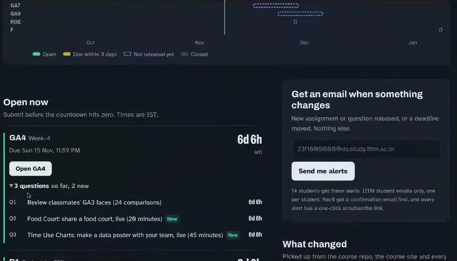
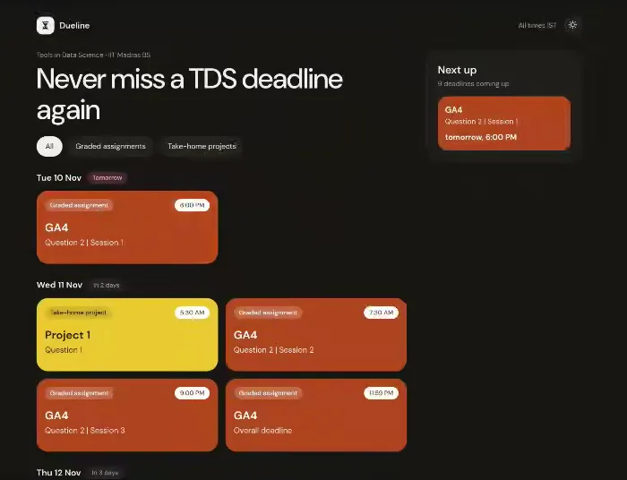

![Eight-panel comic titled ‘TDS course ideation: why this course feels so strange’. 1: an instructor pulls a curtain from an ‘old exam world’ (memorize, solve, write, repeat) to an ‘AI-era training ground’ of agents, tools and dashboards: ‘Yes, this is deliberate.’ 2: deadlines, news and opportunities parachute in; a student’s ‘My watcher’ laptop and an alert bot catch them: signal, alert, action; ‘unannounced deadlines are intentional’. 3: hourglasses shrink from 10 days to 4 days to 20 minutes as a student sprints past hurdles labelled context, live response and turnaround. 4: ‘Food Court challenge’: four students at stalls A–D with 0/10/20% discount buttons, a live profit chart, a group chat agreeing to avoid a price war, and a two-stall payoff sketch. 5: ‘the TDS pit crew’: tools, multiple agents, classmates and websites with a verify checklist: ‘cheat better’ means legitimate leverage. 6: a student with a magnifying glass at a failed login asks ‘bug or your setup?’ beside a thought bubble ‘what am I learning?’ linking tool choice, verification, benchmarking and observation. 7: robots do routine BTech work while students climb steps of judgment, curiosity, collaboration and learning how to learn. 8: students pass under an arch reading ‘Upgrade faster than the world’: build alerts, run experiments, ask better questions, learn from grievances.](comic-page.avif)
Six days, six hours
Ten minutes into the meeting, Anand pulled up a website one of his students had built. TDS no longer pre-announces when questions appear or when they close. It wants students to build their own alarms. A student, Aaryan Panda, had done exactly that. TDS Watcher reads the course site and the exam portal and shows a countdown for everything that is open. Carlton had mentioned it in the chat; Anand was hoping there’d be more such sites
. 09:24
Then he asked the question the course asks of every student: is it up to date? He opened it and shared his screen. The big number said GA4, the week-4 graded assignment, had 6d 6h left. That was right. The deadline had been pushed back that very morning to Sunday 15 November, 11:59 pm IST, and the Watcher had picked up the change. Then Anand read the rows underneath.
“This is a mistake, because the Food Court is a live session…”
GA4 Q2 is a game, played live. You join one of three 20-minute sittings: Tuesday 6:00 pm, Wednesday 7:30 am or Wednesday 9:00 pm IST. Q3 is a team poster built in one of three 45-minute sittings, Thursday to Saturday. The Watcher listed both with the same 6d 6h
as the final deadline. Read literally, it said you had until Sunday to play a game that would be over by Wednesday night.
JK dropped a link to a second student tracker, DueLine, into the chat. 11:22 It was smarter about the game: it showed each Food Court sitting as its own card. But its “GA4 overall deadline” card still sat on Wednesday 11 November, the date the deadline had just been moved from. Yeah, this is misleading
, Anand said, without saying which part he meant. 12:08




“We will need our own tracker for all these trackers. Meta tracker.”
It got a laugh, and it is the best one-line summary of the hour. Neither site was broken. Each was a fast, free, public tool that classmates had signed up to; the Watcher’s alert panel said fourteen students were getting its emails. Neither got the arithmetic wrong. Each got the model of the world wrong. A final submission deadline is one kind of event. A sitting you must be present for is another. A deadline that moved this morning is a third. A tracker that has only the first kind can count perfectly and still mislead you. Our reading
That is the course’s own lesson coming back at it. TDS says that when agents do the execution, humans have to specify and verify. The student did what the course asked: built a tool to watch the course. The next skill is checking that the tool understood what it was watching. The same goes for the course, as the rest of the meeting showed.
Hard to track, on purpose
None of this was an accident. Five minutes earlier, Anand had set out the policy in plain terms. Question timings are not pre-announced and this is intentional
. 06:16 He compared it to work: noticing when a request for proposals drops, when news means you must sell a stock before anyone else, when a tender opens. The skill is an alert system you build yourself, and later one your agent acts on.
“So our hope is that we will be able to take it to the point where your agent can act on it.”
Then came a sketch of where it was heading, and it is worth reading as a proposal, not a schedule: in a term or two from now there will be questions that will be announced at midnight whose deadline will be 4:00 a.m.
07:32 Agents, not sleepy students, would answer them; the smarter configurations will be able to solve it. The lesser configurations will not
. The current three-to-four-day windows, he said, are temporary
and will shrink. 09:12 On the call
Students heard it live. Swarnam typed into the chat that the first Food Court sitting clashed with a viva for another course. 09:04 Anand had a ready answer: No problem. Take it instead on 11th November. That’s why we have three slots.
11:44
JK then gave the programme’s view. Most TDS assessments keep the ordinary 10-day window; one or two or maybe maximum four
carry this kind of pressure. 12:52 Any well-made exam, he argued, mixes questions that almost anyone can attempt with a few highly discriminatory
ones that separate people with a specific skill. 13:24 Carlton suggested a gentler word in the chat: differentiators
. 13:17 JK said that when students raise reasonable grievances, the team has turned questions into bonus marks. 15:12
Three sittings fix one clash. They don’t show who could make none of them.
Tuesday evening, Wednesday early morning, Wednesday night. A student with a job, a viva and a family could miss all three, and we don’t know how many did. The midnight-to-4am plan goes further. If “smarter configurations” win, the question may grade the machine, the subscription and the electricity supply as much as the student. Anand presents that as the lesson, a nudge to set up better agents. It is also a cost, and some can pay it more easily than others. Our reading
Evidence that would settle it: how many students could attend no sitting; whether scores differ by which sitting people could make; and whether students who were told the windows a week ahead did any better at the actual skill than students who had to find them.
“Why don’t you check?”
Two students then showed the policy’s two faces in about five minutes.
Saptadev had posted the same problem on the course forum several times and again in the chat. 14:39 The GA4 face-review app kept telling him to Sign in from GA3
. When he did, it sent him back to the same message. He had a guess: he had not attempted GA3. Carlton gave him the floor.
“So it always says sign in from GA3. I cannot sign in even from my mobile device or some other device.”
Two other students had the same problem, he said. Anand’s reply was the course in miniature: Figure out how to fix it.
18:12 Unless TAs had confirmed a bug, he reasoned, if the majority of the people are not facing the problem… then it’s your configuration
. 18:32 Then he gave a real debugging recipe: Find somebody else’s machine. See if it is only this particular email ID that fails.
19:00 He also said he had run a health scan of the system the day before and that day, and that a confirmed systemic issue would be easy enough to fix
. 21:32
“Most people can log in” proves the system works for most people, not for everyone. A bug that only hits one group, say students who skipped GA3, looks exactly like a configuration problem from the outside. That is what Saptadev suspected. The meeting didn’t settle it, and neither can we. Three students reporting the same message is a reason to test that group, not proof either way.
Preethi raised a second problem from the chat: students who had done GA3 couldn’t paste their participation receipt. 16:18 That one had an answer: That is intended
, Anand said, because the review was still open. 19:32 When would that be? I’m consciously not telling you
, he said, because finding out is part of the work. 20:04 Preethi tried to pin it down anyway.
Preethi: “…the GA4 is 11th is the deadline, right?”
Anand: “Why don’t you check?”
Preethi: “Oh, God.”
Anand was smiling. But the news is good, not bad.
20:56 She found the GA4 page and read out the new date: Sunday 15 November. In twenty seconds she had done what DueLine hadn’t, and the “Oh, God” is the sound of what that discovery costs: the jolt of realising that what you thought you knew may already have changed.
The course has a fair defence. The change was not hidden. The GA4 page said in a yellow box that the deadline had been extended from Wednesday 11 November
, and one student-built tracker had caught it by the evening. In the code Anand added, for the TAs, that he had just introduced a question that would probably fail on Safari, on purpose, to see who notices that browsers differ. 22:04
What a learner can figure out alone, the system still has to state, and keep working.
The good news reached Preethi because she was on a live call and was told to look. A student who wasn’t there had to find the yellow box, or trust a tracker that had or hadn’t noticed. Self-reliance is a fine skill to teach. It’s a poor way to deliver a fix for a bug only a few people hit. The course seems to know this: it ran health scans, kept three sittings and turned hard questions into bonus marks. The open question is whether anyone measures what slips through. Our reading
Four stalls, twelve months, twenty minutes
Why squeeze the clock at all? Anand’s answer started with an overstatement: AI can answer anything given time
. 23:16 His real point was narrower: people still want a good answer now. People still expect, I ask you a question, I want a smart answer immediately.
23:36 To show what that means, he opened a spreadsheet.
The Food Court is a live game. In one of the three sittings, four or five classmates land in a room. Each runs a stall in the same food court for a simulated year. Every month each stall picks one of three discounts: 0%, 10% or 20%. A discount pulls customers from rivals and brings more people into the whole court, but you earn less on each meal. Customers remember last month. There is a chat box. After twenty minutes, whatever plan you last saved is the plan you run. 25:20 In the code
“If everybody gets it to 20%, customer is happy but all of you are making less profit. You can chat. You can all decide to collude and set it to 0%.”
He summed it up as how can you collaborate and win
27:24, and he told students to use their agents, with a twist: it’s not as much about the agent. It is more about whether you can convince your peers the right way.
28:28 He guessed the humans might even beat their best agents here, because you know
your classmates. Preethi asked in the chat whether they could play all three sittings. JK: Yes
. 28:49
On the call, Anand said your marks are going to be based on your profit
. 27:12 The question as published says otherwise. Your mark is 60% the whole court’s profit and 40% your own. Both are scored against the best result that is actually achievable, and your best signed result from up to three sittings counts. The spoken version is a shortcut; the code is the contract. In the code
Two things fall out of the toy, and both bear on what the game can teach. First, “collude at 0%” isn’t the safe group play it sounds like. Discounts bring people into the whole court, so a court where nobody discounts leaves money on the table. Over a year, it scores the same as an all-out price war, to one decimal place. Second, the 60% team weight doesn’t remove the temptation. From “everyone at 10%”, any one stall can lift its own grade by jumping to 20%. Each rival then does the same, and the room slides to 20/20/20/20, where everyone does worse than where they started. That is the textbook prisoner’s dilemma, played with classmates, a chat box and a clock. Toy model
JK put a label on it: operation research at an MTech level
plus the street-smart baniya instinct from a film like Guru. 29:46 Anand went further: today, why would I hire a BTech or a BS? An agent can do that.
31:03 JK agreed he now wanted close to PhD level skill sets
from people working under him. 32:28 These are two employers’ views, not labour-market data. They explain why the course keeps raising the bar, and how high the bar is.
An agent can optimise the spreadsheet. Only the chat shows whether anyone learned to persuade.
Suppose one student asks an agent for the best plan and pastes it into the chat, and the room trusts it. The room scores well, but did anyone learn negotiation, or game theory? The grade can’t say. The hypothesis, that twenty minutes of live haggling builds an intuition for strategic decisions, is plausible and untested. The game does keep each room’s chat, so it could be tested by reading what rooms actually said, not just what they earned. Our reading
“You figure it out”
JK opened the floor: if you are silent at this point of time, forever you will stay silent
. 31:48 Hritik, a TA, passed on what students keep asking him. Looking at a question, they want to know what they are meant to be learning, and what a live session can teach them. They want it pinned down to tools and skills. 33:36
“If somebody asked me what am I learning, my first answer will be: you figure it out. That’s also part of the learning.”
He gave reasons. One question can teach several things. Learning is a choice.
34:20 Teachers, he argued, are not actually trying to teach students. They are creating an environment so that students will be able to learn.
34:28 Later he split his answer in three. A: work out what you learned. B: he has things he means to teach, and will share his intent when the time is right
. C: you learn something just by practising, even if you can’t name it. 39:00 He backed C with an image, not a statistic: you can’t learn to swim in a classroom. 37:44 (His 90% of our actions are subconscious
is a figure of speech, not a measurement.)
Then he made a claim that can be checked. The team had measured, he said, how often a student who failed a skill on one assignment passed it on a later one.
“On the good questions, the learning seems to be only around 20 or 30%… For some reason, we have created questions where students are doing even worse the second time… Luckily, more than half the questions, there is a certain amount of positive learning that we can measure.”
That is a striking and honest number: even on the best questions, only 20 to 30% improved by his measure, and some questions went backwards. But “failed, then passed” is a slippery signal. The later question may be easier. Agents may have improved between quizzes. The students who failed may simply have tried harder the second time. The widget below uses made-up numbers to show the trap.
This isn’t a hypothetical worry. The team’s exploratory analysis behind Anand’s figure is unpublished, and we could not rerun it, so we don’t quote its numbers. Not independently checked But its own write-up flags this exact problem. For one of its best-looking pairs, an earlier question on a different skill predicted later success almost as well as the related one did. “They improved” was real. “They learned that skill” didn’t follow. The same write-up found the opposite pattern on a terminal-recording task: earlier success strongly predicted later success. That points to a real skill. It also means the students who lacked it mostly hadn’t picked it up by the next test.
Carlton then brought in the outside world. He had shared a BBC piece in the chat 36:58: “Graduates are managing AI – but are they learning much else?” by MaryLou Costa, 4 November 2026. His reading was upbeat. Lotte Underwood, 25, a recent graduate, works in the AI team of a London PR agency, Fight or Flight. The team has built around 30 agents for research, client reports and interview prep, and her job is to manage them and check their output. She’s effectively become an AI manager. And that’s the kind of upskill that companies are looking for.
40:20 He added a story about a non-coding insurance founder running his office on agents, and access to an unlimited number of PhDs for $20 a month
. 42:00
The headline is a question, and the piece doesn’t answer it with a yes.
Under the subheading “Learning the trade”, the BBC asks whether graduates whose working day is spent on AI miss the professional craft they were hired into. Underwood herself says there are traditional PR skills, like pitching directly to the media, that she hasn’t had the chance to do yet
. Research That is the strongest objection to Anand’s “let agents do the BTech work; you do the layer on top”. Where does the judgment for the layer on top come from? JK, after Anand had left, called it the missing “battle scars”.
One question, five lessons
So Anand ran an experiment on the spot. He opened the September GA3 and asked the TAs and students what the face-morphing questions teach. In Q7 you make a video that morphs one face into another. In Q8 you rank ten pairs of faces by how easy they would be to morph. Not that there’s necessarily a right or wrong answer.
42:18 He got five different answers, and each was defensible.
Preethistudent · chat 43:16
Observation
She typed
observation skills?
, then unmuted to recall the morphing in Michael Jackson’s “Black or White” video and reason it out. Similar face shape, sex and hair should morph smoothly; black-and-white to colour, or blonde to black hair, should be harder. 43:36 Anand put up his own list of AI-era skills, which includes Noticing:Spotting important, interesting, risky, … stuff before anyone asks for it.
44:44HritikTA 49:35
What the model understands
From a photo, the skeleton limits which faces are possible, so a 3D reconstruction shows whether a model understands human anatomy. Anand reframed it as a way to benchmark
how well LLMs understand the human body structure
. 50:30 In the chat, Hritik also suggested Q8 exposes a model’s bias. 46:59AgrimTA · chat 51:04
Spatial understanding
Two words in the chat, while the others talked. They name a capability, not a tool.
JKprogramme team 50:52
Depth, and choosing a model
Depth perception, as in search and rescue or terrain reconstruction, where decisions depend on the 3D model being accurate. Later he added benchmarking: knowing which model to use for which task will be
number one question
for graduates joining a firm. 57:45Anandinstructor 53:52
Find the tool
A free service like Meshy turns a photo into a decent 3D model.
It’s largely about discovery.
Then the line most likely to be quoted out of context:The point here is to bloody cheat. Do as little work as possible to get the best possible score.
54:36 He meant cheatingin the conventional sense where everybody is supposed to work independently
: in a course that allows agents and classmates, asking for help is the method. 55:04
The disagreement is the finding. Same question, five learning objectives, all reasonable, none measured. A rubric that rewards a good morph can’t tell you which, if any, the student took away. Anand’s own hope was modest. Reflection requires potentially 5 minutes of thinking afterwards… why did I get this question wrong. I’m conscious not everybody has the time
. 45:32
Hritik then named what most of the five share: can a student choose the tools an agent needs, and can they verify the results? 55:28 Exactly the kinds of learnings we want
, Anand said. 55:54 Before moving on, JK told an old IIT story. A professor set a test no one passed. Asked why, he said he thought at least one of you would
solve it, and the hostel threw a party. 60:16
Then Anand made the distinction concrete. It’s not just what model but what tool.
61:40 He played two submitted videos side by side. One faded from face to face. The other morphed: if you pause it at roughly any point, it approximately looks like a plausible face.
62:04
How did the better students do it? If you go to any StyleGAN2 kind of network… let’s take facemorph.me. Upload the two images
, and you get a fantastic morph
. 62:24 The best part was his confession. He hadn’t known about it either. He had assumed students would mark control points by hand.
“Then I saw facemorph.me and said, damn it, this is a trivial question… I should not give this question. Then I paused again, said, wait, hold on, I didn’t know this.”
He kept the question for the students who wouldn’t know either. He described a spectrum of submissions: manual fades, agents told to do it badly, people who never checked what classmates had done, and those who found the right tool, maybe the hard way, maybe the easy way
. 63:36 The most learning, he said, came to students who went from “this is hard” to “oh, this is easy”. 64:08 GA4 Q1, the face review Saptadev couldn’t get into, exists to show everyone that spread. 64:32
Worth automating
- Producing the morph video
- Converting a photo into a 3D mesh
- Running ten face pairs through three services
- Writing a benchmark script
Worth learning
- Suspecting that a hard-looking task is already solved, and searching for it
- Telling a fade from a morph, and a groove that shouldn’t exist in a 3D model
- Choosing which tool or model to trust, for this task
- Knowing when the result is wrong
After the instructor left
The meeting had run over. JK asked for one small thing
and moved from what students learn to how. 64:52
“Learning how to learn is a very critical skill… in education terminology we call it metacognition.”
His advice was specific. Over the term, look back at each assignment and ask what you learned and how, because how I learned is more critical than what I learned
: the how transfers, while the what gets made obsolete. 66:00 At 66:24, he said like what Anand was saying
. Two seconds later, Anand typed into the chat: I have a hard stop. Need to drop. Thanks!
66:26 Meeting chat The last eleven minutes went on without him, and they are where the course turned the measuring tools on itself.
JK described each student as running a learner model
. Every assessment, in every course, is giving you a new set of data that you should mine and improve yourself
. 67:40 The team does the same at a pace that would once have been absurd: a year ago a lesson changed next term’s questions; nowadays it is like, okay, I learned this, next week what should my assessment be?
68:20
Carlton then mentioned the most concrete step of the day. He had drafted three questions to track the same students’ progress on a repeated skill, put them on a branch of the exam portal, and sent them to JK for review, asking whether it would work for GA5
. 68:36 Proposal, not released JK said he drafts deep-research plans in Gemini and has ChatGPT critique them. Carlton turned that into advice for students:
“Not to just rely on a single agent, but to actually use multiple agents… and use each of them to critique each other, and… it will cover the blind spots that those agents have.”
Then JK did something the instructor’s half of the meeting hadn’t. He named the students’ experience without arguing with it. The course seems to be overwhelming for a large majority of you
, and the feeling of I don’t know what I learned
after working with AI is a common phenomena
. You’re not alone.
71:00 Carlton admitted the same about writing the GA5 questions with an AI: it produced more stuff than I could comprehend
. He had to go back and ask it to explain itself before he could judge whether a question was worth anything. 71:36
“The handicap that the current generation of students will have when they pass out from a degree is that they don’t have that battle scars that a senior employee used to have.”
That is the BBC article’s worry in JK’s words, and his answer was to fail on purpose, early, and pay attention to how you recover: it’s not the CG that’s important
(CG being the grade average). How is a failure made more productive?
74:00 Hritik added the students’ side. He had typed it earlier in the chat 73:47 and now said it aloud: when everyone has an agent, if students are able to ask a good question, they will able to learn
. 74:48 JK closed by renaming complaints as grievances and hoping the session had dealt with half of them. Then he asked for the opposite of applause.
“If you’re disagreeing, do a thumbs down. That is also fine, because that is what the whole purpose of education is.”
Reflection helps most when someone shows you how to do it.
The Education Endowment Foundation’s guidance on metacognition for 16–19 learners (August 2026) recommends teaching planning, monitoring and evaluation explicitly: model it, practise it with support, then hand over. It warns against assuming students develop these habits unaided. Research Those are school and college students in England, not adults online at IIT Madras, and the guidance doesn’t show that TDS’s approach fails. But it sides with JK’s structured “look back at how you learned” and with Anand’s plan B, sharing his intent afterwards, more than with “you figure it out” alone. It is the same idea as cognitive apprenticeship: make the expert’s thinking visible.
Put the meeting’s claims on a ladder and you can see what the course knows and what it hopes. A course that asks students to verify agents should verify its own claims about learning, and the ladder shows how far it has climbed.
1 · Claimed
“Students learn initiative from moving deadlines.” “Twenty minutes builds business intuition.” “The how transfers.”
Status: argued on the call2 · Performance rises
Some students who failed a skill pass it later: 20–30% on the good questions, by Anand’s report.
Status: reported, unpublished3 · Beats a control
The improvement is bigger than an unrelated earlier question would predict, for that specific skill.
Status: mixed in the exploratory analysis4 · Transfers
Students succeed on a new, unseen task needing the skill, with skill-level probes rather than a single pass/fail per question.
Status: not yet measured · GA5 drafts aim hereThat is not an indictment. Most courses never get to rung two, and few say their weak results out loud on a public stream. But it does answer the question the student tracker raised at 10:28. Who watches the watchers? Here, the people being watched, if the course keeps doing this in the open. Students spotted the tracker’s blind spots and the login failures. A TA noticed that one question had five objectives. A news article forced the counterargument. A programme lead asked for thumbs down.